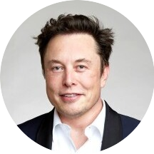

|  |
ELON MUSK
Founder, CEO and chief engineer of SpaceX; Angel investor, CEO and product architect of Tesla,
; owner and CEO of Twitter, Inc.; founder of
The Boring Company; co-founder of Neuralink and OpenAI; and president of the philanthropic Musk Foundation.
Musk was born in Pretoria, South Africa, and briefly attended at the University of Pretoria before moving to Canada at age 18, acquiring citizenship through his Canadian-born
mother. Two years later, he matriculated at Queen's University and transferred to the University of Pennsylvania, where he received bachelor's degrees in economics and
physics. He moved to California in 1995 to attend Stanford University. After two days, he dropped out and with his brother Kimbal, co-founded the online city guide
software company Zip2. In 1999, Zip2 was acquired by Compaq for $307 million and Musk co-founded X.com, a direct bank. X.com merged with Confinity in 2000 to form PayPal,
which eBay acquired for $1.5 billion in 2002. |